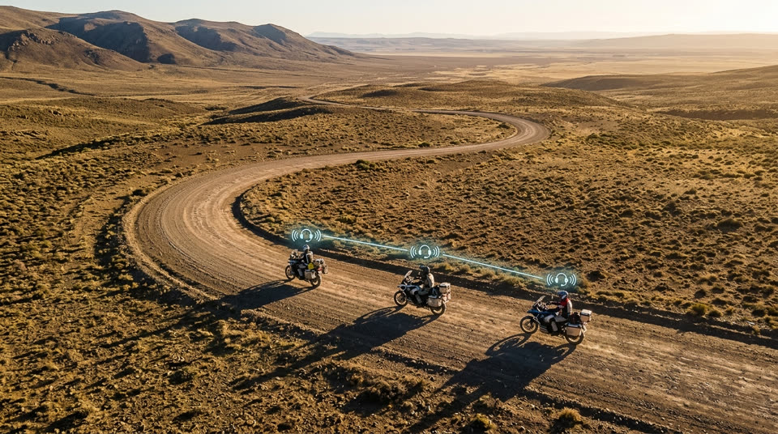
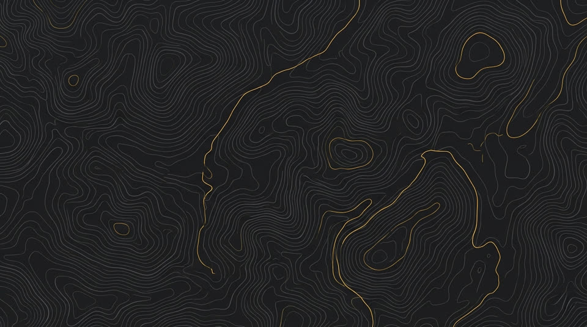
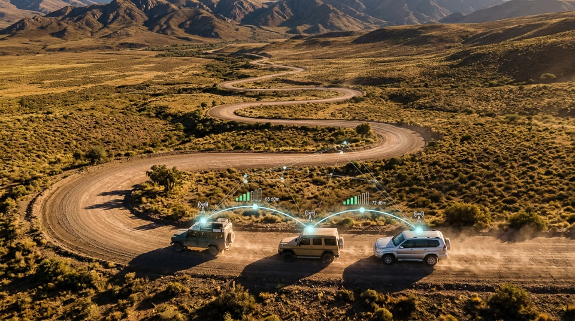

BAQUEANO-MTTT VHF AR
Radio VHF para grupos de motos y 4x4 en Argentina.
Sin licencia. Sin internet. Sin costo mensual.
Descripción
Un walkie-talkie VHF digital de bolsillo que se conecta al celular por USB y opera en los tres canales autorizados por la Resolución 5/2015 del Ministerio de Transporte. Ideal para comunicación directa entre motos en ruta, sin depender de cobertura celular, aplicaciones de terceros ni suscripciones.
Módulo SA818-V de 1 W. Alcance útil de 3 – 8 km en campo abierto según terreno.
Controla la radio desde el teléfono: canal, volumen, PTT táctil. Conexión USB-C.
Microcontrolador ESP32-WROOM-32U. PCB compacto, montable en el manubrio o chaleco.
Los tres canales son de uso libre según normativa ENACOM. No requiere licencia de radioaficionado.
Comunicación directa radio-a-radio. Funciona donde no hay señal.
Fork de kv4p HT. Código, firmware y PCB disponibles en GitHub bajo licencia GPL-3.0.
Imágenes y video



Frecuencias legales
Resolución 5/2015 del Ministerio de Transporte, Turismo y Telecomunicaciones — uso libre en Argentina
| Frecuencia | Canal | Uso | Estado |
|---|---|---|---|
| 139.970 MHz | PrincipalCanal 1 — uso primario de grupo | Comunicación general, convoy, coordinación de ruta | Principal |
| 138.510 MHz | AlternativoCanal 2 — subgrupos o canal libre | Subgrupos, canal secundario, coordinación logística | Alternativo |
| 140.970 MHz | EmergenciaCanal 3 — reservado para urgencias | Accidentes, asistencia mecánica, urgencias médicas | Emergencia |
Fuente: Resolución 5/2015 — InfoLEG. El firmware valida que solo sea posible transmitir en estas tres frecuencias. No requiere licencia ni trámite ante ENACOM para usuarios finales.
Uso
Descargá el APK desde GitHub Releases o compilalo vos mismo. Compatible con Android 8.0+.
El módulo Baqueano se conecta al teléfono como dispositivo USB. La app lo detecta automáticamente.
Seleccioná 139.970, 138.510 o 140.970 MHz según el uso.
El firmware solo permite estas tres frecuencias.
Tocá el botón PTT en pantalla o usá el botón físico del hardware para transmitir. Soltá para escuchar.
Sin internet, sin servidor, sin costo. Radio-a-radio, igual que un handy profesional.
Estado del proyecto
El firmware y la app Android están operativos. El diseño del PCB v2.0e está en revisión final.
Hardware de producción no disponible públicamente todavía — próximamente.
Contacto
Preguntas, colaboración o reporte de bugs: